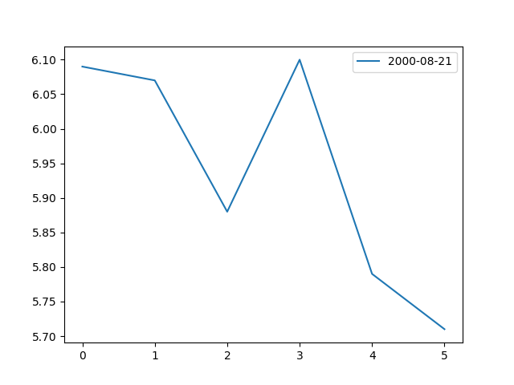
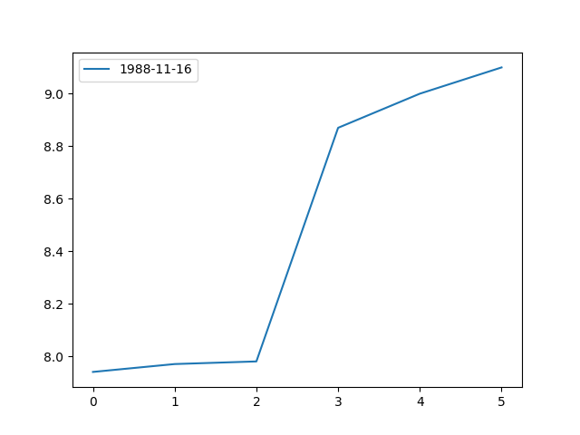
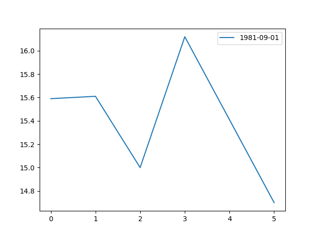
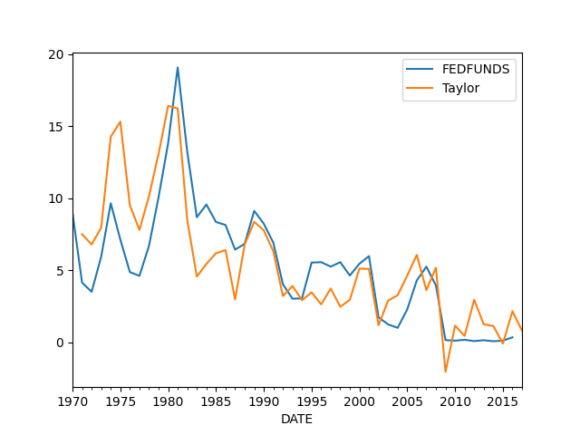
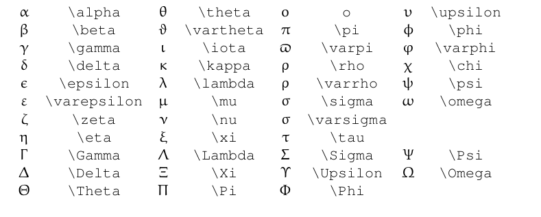

Ekler
Log Veri Analizi
Zaman serisi veri analizlerini anlatan kaynaklarda bazen "şimdi veriyi ilişkisel olarak analiz etmek için onun log'unu alalım" gibi ifadeler görebiliyoruz. Bu sözle ne demek isteniyor?
Diyelim ki $y_1,y_2,..,y_n$ zaman serimiz var, log matematiğinden biliyoruz ki
$log(y_{t}/y_{t-1}) = \log(y_t) - \log(y_{t-1})$
Yani bu serinin önce log'unu alıp sonra farkını hesaplarsak, sanki artış yüzdesinin log'unu analiz etmiş gibi oluruz, yani yüzde değişim rakamına odaklanmış oluruz, o artışın baz aldığı önceki seviye ne olursa olsun.
Ama başta sadece log'u analiz edelim diyor, farkı hesaplamadık diyelim? Yine de dolaylı olarak o farka odaklanıyor olabiliriz, mesela kullandığımız metot matematiksel olarak arda arda gelen noktaların farkını bir şekilde ortaya çıkartmaya uğraşıyor ise (pek çok metot bu kategoriye girer), o zaman yine veriye "ilişkisel olarak" bakmış oluruz.
Sayısal örnek: hisse senedi A 1 TL'den 1.10 TL'ye çıktı, senet B 100 TL'den 110 TL'ye çıktı. Hem A, hem B yüzde 10 arttı. Fakat A TL olarak 10 kuruş kazandı, B 10 TL kazandı. Eğer log uzayına çevirirsek,
A $\log_{10}(1)$'den $\log_{10}(1.10)$'a çıktı yani 0'dan 0.0413'e çıktı. B $\log_{10}(100)$'den $\log_{10}(110)$'a çıktı yani 2'de 2.0413'e çıktı.
Görüldüğü gibi yüzde değişiklik salt değer değişimine dönmüş oldu.
Bazı Zaman Serileri Hesaplama Numaraları
Faiz Getiri Hesabı
Eldeki sermaye 100 lira, ve her ay yüzde 5 kazandıran bir yatırım var, 10 ay sonra elde ne var? Not: her ay sonunda eldeki tüm sermayeyi tekrar geri yatırılıyor, yani birleşik faiz (compound interest) hesabı lazım, bu hesaplarda ilk aydaki 100 lira 105 olur, 105 geri koyulur, ikinci ay $105 \cdot 0.05 = 5.25$ kazanılır, 110.25 geri koyulur, vs.
Numpy / Pandas ile bu hesapları basitleştirmenin yolu cumprod
kullanmak, bu çağrı ile her hücre kendinden önce gelen tüm hücrelerin
çarpımıdır, yani bu çarpım bir kümülatif çarpımdır (cumulative product),
mesela her hücrede 2 değeri olsa
import pandas as pd
df = pd.DataFrame(np.ones((10,1))*2,columns=['x'])
df['kumulatif carpim'] = df.x.cumprod()
print df
x kumulatif carpim
0 2 2
1 2 4
2 2 8
3 2 16
4 2 32
5 2 64
6 2 128
7 2 256
8 2 512
9 2 1024
Bu numarayı birleşik faiz hesabı için kullanabiliriz; her zaman anında elde olan faiz sermaye $s$, faiz $f$ için $s \cdot (1+f) \cdot (1+f) ... $ olarak hesaplanabilir, ki $(1+f)$ çarpımını istediğimiz zaman dilimi için uzatabiliriz. Baştaki örnek için
df2 = pd.DataFrame(np.ones((10,1))*0.05,columns=['f'])
df2['s'] = 100. * (1+df2.f).cumprod()
print df2
f s
0 0.05 105.000000
1 0.05 110.250000
2 0.05 115.762500
3 0.05 121.550625
4 0.05 127.628156
5 0.05 134.009564
6 0.05 140.710042
7 0.05 147.745544
8 0.05 155.132822
9 0.05 162.889463
Yani 10 ay sonunda eldeki para 162 lira.
Bu numarayı pek çok değişik hesap için uyarlayabiliriz.
Soru
Öyle bir oyun var ki eğer yazı/tura sonucunu tahmin ederseniz koyduğunuz para kadar getiri elde ediyorsunuz, yoksa o kadar kaybediyorsunuz. Bir oyuncunun tahmin başarısı yüzde 55. Bu kişi her elde, o anki sermayesinin yüzde 5'ini koyuyor. Simülasyon ile 1000 el sonraki kümülatif getiriyi bulun.
Cevap
"Eldeki sermayenin yüzde 2'sini yatırmak" aslında bir tür birleşik faiz
hesabı olarak görülebilir, tabii bu faiz tahminin tutup tutmamasına göre ya
pozitif etkilidir, ya negatif etkilidir. Bunun için numpy binom
dağılıma 1000 tane 0/1 zar attırırız, sonra 0 değerleri -1 yaparız, yani
-1/+1 zar olur, zar değerlerini 0.05 ile çarparız, sonuçları cumprod
ile birleştiririz,
data = np.random.binomial(n=1,p=0.55,size=1000)
df3 = pd.DataFrame(data,columns=['dice'])
df3.loc[df3.dice==0,'dice'] = -1
cumret = 100.*(1+0.05*df3.dice).cumprod()
print cumret.tail(1)
999 3157.474029
Name: dice, dtype: float64
Getiri Eğrisi (Yield Curve)
Bir tahvilin getirisinden bahsettik. Önemli bir grafik türü farklı olgunlaşma (maturity) tarihlerindeki aynı tip tahvillerin herhangi bir gündeki getirisi. Mesela herhangi bir gün için 3-ay, 6-ay, 1-sene, 5-sene, 10-sene, 30-senede olgunlaşan hazine tahvillerinin getirisine bakıyoruz, bu noktaları yanyana koyup bir grafik olarak resmediyoruz. Olgunlaşma zamanı arttıkça şekil neye benziyor? Alttaki üç farklı gün için getiri eğrisini gösteriyoruz,
import pandas as pd
ts = ['treas3M','treas6M','treas1Y','treas5Y','treas10Y','treas30Y']
dfs = [pd.read_csv('%s.csv' % t, index_col=0,parse_dates=True) for t in ts]
# verileri getmat.py ile indirdik
#
dt = '2000-08-21'
res = pd.DataFrame([df.ix[dt,'VALUE'] for df in dfs],columns=[dt])
res.plot(); plt.savefig('tser_z001_05.png')
dt = '1988-11-16'
res = pd.DataFrame([df.ix[dt,'VALUE'] for df in dfs],columns=[dt])
res.plot(); plt.savefig('tser_z001_06.png')
dt = '1981-09-01'
res = pd.DataFrame([df.ix[dt,'VALUE'] for df in dfs],columns=[dt])
res.plot(); plt.savefig('tser_z001_07.png')
  
Bir grafik Kasım 16, 1988 yılın için, normal olan bu grafik, uzun vadeli faiz (hazine tahvillerinin getirisine uzun vadeli faiz deniyor) kısa vadeden daha yüksek, fakat bu yükseklik yüzde 1 civarında, bu eğriye "düz" denebilir.
Diğer grafik Eylül 1981 için, uzun vade kısa vadeden daha düşük, yani tahvil piyasaları ileride faizlerin daha düşük olacağını tahmin ediyor. Bu tür eğrilere "tersine dönmüş (inverted)" deniyor, normalde olanın tersi çünkü. Terse dönmüş eğrilerin gelmekte olan ekonomik durgunluğu tahmin ettiği söylenir [4, sf. 85].
Taylor Kuralı (Taylor Rule)
Merkez Bankalarına yardımcı olan araçlardan biri Taylor Kuralı; bu kural, yani formül, olması gereken Merkez Bankası faiz oranı, mevcut enflasyon $\pi$, hedef enflasyon $\pi^\ast$, ideal faiz oranı $r^\ast$ ve reel ve potansiyel gayrısafi milli hasıla (GSYH) farkı arasında bir ilişki kurar.
$$ FF_t = r^\ast + \pi_t + 0.5 (\pi_t-\pi^\ast) + 0.5 Gap_t $$
Alttaki script ile ABD için kuralı hesaplayabiliriz, FEDFUNDS ABD Merkez Bankası FED'in ne yaptığı, Taylor ise formülün taviyesi,
# veri indiren script gettaylor.py
import pandas as pd
df = pd.read_csv('taylorfred.csv', parse_dates=True,\
index_col=0,comment='#')
df = df.resample('AS');longrun = 2.0
df['GDPC1'] = df.GDPC1.interpolate(method='spline',order=1)
df['Gap'] = 100. * (df.GDPC1/df.GDPPOT-1)
df['Curr'] = df.PCEPI.pct_change()*100.
df['Taylor'] = longrun + df.Curr + 0.5*(df.Curr - longrun) + 0.5*df.Gap
df[['FEDFUNDS','Taylor']].plot()
plt.savefig('tser_z001_09.png')

İki grafik çoğunlukla birbirine yakın gidiyor, ayrıldıkları noktalar da var tabii; ve fomülü keşfeden John Taylor'a göre bunlar FED'in hata yaptığı yerler. Mesela 2000'lı yılların başlarında faizler formülün dediğinden daha düşük, ve 2008 krizine giden yol taşlarından birinin aşırı düşük faizler olduğu biliniyor. Daha fazla detay için [4, sf. 278].
Alış Fiyatı-Satış Fiyatı Aralık Tahmini (Bid/Ask Spread Estimation)
AFSF aralığının tanımı terimler kısminda bulunabilir. Akla soru gelebilir, aynen günün en düşük, en yüksek fiyatları gibi AFSF fiyatları piyasalar tarafından kaydedilmiyor mu? Bazen hayır. Özellikle açık kaynaklardan veri alınınca her tür veriyi alabileceğimizi beklememiz lazım, ki AFSF fiyatları bundan biri. Aracı kurumumuz bize anlık bu bilgileri yakın tarihler için sağlasa bile, geriye dönük veri için bu veri mevcut olmayabilir. Bu durumda eldeki bilgilerden tahminsel hesap yapılabilir.
[5]'teki yaklaşıma göre ardı ardına iki günün en düşük / en yüksek fiyatlarına bakarak AFSF için bir tahmin edici yaratmak mümkündür. Yaklaşımlarının arkasındaki ana fikirler şunlar; Birincisi, en yüksek fiyatlar alımlar, en düşük satımlar tarafından tetiklendiğine göre AFSF aralığı bu fiyatlarla muhakkak bağlantılı olmalıdır. İkinci fikir, yüksek / düşük fiyatlarının oranının oynaklığa bağlı olan kısmı, onu üzerinden hesapladığımız zaman dilimi büyüdükçe ona oranla büyür, fakat onun AFSF'ye bağlı olan kısmi değişmeden kalır. Bu fikirleri kullanarak sadece arka arkaya iki güne bakarak yazarlar bir tahmin edici ortaya çıkartıyorlar [6]. Formüller şöyle,
$$ \beta = \bigg( \ln \frac{H_t}{L_t} \bigg)^2 + \bigg( \ln \frac{H_{t+1}}{L_{t+1}} \bigg)^2, \quad \gamma = \bigg( \ln \frac{H_{t,t+1}}{L_{t,t+1}} \bigg)^2 $$
ki $H_t,L_t$ $t$ gününün sırasıyla en yüksek ve en düşük fiyatları, $H_{t+1,t},L_{t,t+1}$ ise ardı ardına iki günün en yüksek ve en düşük fiyatları. Ardından,
$$ \alpha = \frac{\sqrt{2 \beta} - \sqrt{\beta}}{3 - 2 \sqrt{2}} - \sqrt{\frac{\gamma}{3 - 2\sqrt{2}}} $$
Ve nihai tahmin edici
$$ S = \frac{2 (e^{\alpha} - 1 )}{1 + e^{\alpha}} $$
df = pd.read_csv('20day.csv',sep='\s*')
df['Lt1'] = df.Lt.shift(-1)
df['Ht1'] = df.Ht.shift(-1)
def f(x):
beta = np.log(x.Ht/x.Lt)**2 + np.log(x.Ht1/x.Lt1)**2
gamma = np.log( max(x.Ht,x.Ht1) / min(x.Lt,x.Lt1) )**2
alpha1 = (np.sqrt(2*beta)-np.sqrt(beta)) / (3 - 2*np.sqrt(2))
alpha2 = np.sqrt(gamma / (3-2*np.sqrt(2)))
alpha = alpha1 - alpha2
S = 2*(np.exp(alpha)-1) / (1 + np.exp(alpha))
return S
df['S'] = df.apply(f, axis=1)
df = df.fillna(0)
df.loc[df.S<0,'S'] = 0
print df.head()
Close Lt Ht Lt1 Ht1 S
0 25.25 25.25 25.32 25.19 25.32 0.001683
1 25.32 25.19 25.32 25.28 25.41 0.000000
2 25.30 25.28 25.41 25.28 25.38 0.003243
3 25.33 25.28 25.38 25.27 25.37 0.002995
4 25.33 25.27 25.37 25.36 25.45 0.000000
Corvin, Schultz (CS) tahmin edicisi bazen negatif değerler verebiliyor, bu durumda bir yaklaşım bu değerleri sıfır yapmak, ve bu aralığı "çok küçük" olarak kabul etmek. Eğer birkaç gün üzerinden ortalama alınırsa tabii ki bu sıfır değerleri nihai ortalamanın aşağı inmesini sağlayacaktır.
Kurları Tahmin Etmek (Taslak)
İki ülke arasındaki kurlar o ülkelerin fiyat seviyelerinin oranıdır. Değil mi? Eğer berbere Japonya'da 1000 yen Türkiye'de 10 lira veriyorsam (ve başka fiyat olmadığını düşünelim) o zaman Yen/TR kuru 100 yen olmalı. Tekrar ana formülden başlayarak her iki ülke için bu formülleri düzenleyip bölüm haline getirirsek,
$$ M_1V_1 = P_1Y_1, \quad M_2V_2 = P_2Y_2 $$
$$ \frac{P_2}{P_1} = \frac{M_2}{M_1} \cdot \frac{Y_1}{Y_2} \cdot \frac{V_2}{V_1} $$
$$ \log \left( \frac{P_2}{P_1} \right) = \log \left( \frac{M_2}{M_1} \right) + \log \left( \frac{Y_1}{Y_2} \right) + \log \left( \frac{V_2}{V_1} \right) $$
$$ = \log(M_2) - \log(M_1) + \log(Y_1) - \log(Y_2) + \log(V_2) - \log(V_1) $$
$$ = \log(M_2) - \log(M_1) + \log(Y_1) - \log(Y_2) $$
$V$'ler iptal oldu çünkü hızı sabit kabul ediyoruz,
df = pd.read_csv('exch.csv',parse_dates=['DATE'])
df = df.set_index('DATE')
df = df.interpolate(method='linear')
k = 5
df['lm1'] = np.log(df.nonfinloanus).shift(k)
df['lm2'] = np.log(df.nonfinloanjp).shift(k)
df['ly1'] = np.log(df.realgdpus).shift(k)
df['ly2'] = np.log(df.realgdpjp).shift(k)
df['lxjpus'] = np.log(df.xjpus)
df = df.dropna(axis=0)
import statsmodels.formula.api as smf
results = smf.ols('lxjpus ~ lm1 + lm2 + ly1 + ly2', data=df).fit()
print results.summary()
OLS Regression Results
==============================================================================
Dep. Variable: lxjpus R-squared: 0.432
Model: OLS Adj. R-squared: 0.424
Method: Least Squares F-statistic: 53.88
Date: Wed, 30 May 2018 Prob (F-statistic): 1.00e-33
Time: 20:09:26 Log-Likelihood: 249.15
No. Observations: 288 AIC: -488.3
Df Residuals: 283 BIC: -470.0
Df Model: 4
Covariance Type: nonrobust
==============================================================================
coef std err t P>|t| [95.0% Conf. Int.]
------------------------------------------------------------------------------
Intercept -35.7050 4.321 -8.263 0.000 -44.211 -27.199
lm1 -0.5512 0.118 -4.663 0.000 -0.784 -0.318
lm2 1.2863 0.190 6.768 0.000 0.912 1.660
ly1 1.7492 0.305 5.732 0.000 1.148 2.350
ly2 0.8758 0.408 2.146 0.033 0.073 1.679
==============================================================================
Omnibus: 13.370 Durbin-Watson: 0.067
Prob(Omnibus): 0.001 Jarque-Bera (JB): 9.922
Skew: -0.346 Prob(JB): 0.00701
Kurtosis: 2.409 Cond. No. 1.67e+04
==============================================================================
Uyum oldukca iyi, $R^2$ yüksek. İlginç bir gözlem, $k$ ile ne kadar geriye giderek kuru tahmin edebileceğimizi kontrol etmeye uğraştık, 5 periyot geriye gitmek en iyi sonucu verdi, bu zaman serisinde periyot ay bazlı, yani 5 ay öncesinden gelecekteki kuru tahmin etmek mümkün!
Finans Terimleri Açıklamaları
Arbitrage (Arbitraj)
Bir teminatın döviz kuru vs. gibi nedenlerle farkı piyasalarda çok kısa süreli de olsa farklı değerden işlem görmesi sonucu aradaki ufacık farktan yararlanma işlemi. Kelimenin kökü arbitrate kelimesinden geliyor, yani hakemlik yapma, aradaki anlaşmazlıkları çözmek. Finans durumunda arada bir anlaşmazlık var, sadece bu bir fiyat anlaşmazlığı, ya da kısa süreli bir "uyumsuzluk". Borsacı bu uyumsuzluğu görerek ondan faydalanıyor.
Arbitraged Away (Arbitrajın Tüketilmesi)
Arbitraj işlemleri piyasadaki enformasyon verimsizliğinden istifade etmek anlamına geliyorsa, o zaman pek çok kişinin belli bir verimsizlik üzerinden işlem yapması o verimsizliği yokedebilir. Mesela bir ortalama dönüş stratejisinde alttan alıp üstten satıyoruz, fakat pek çok kişi bu stratejiyi kullanıyor ise en tepede pek çok kişi satar, ve fiyat çıkabileceği kadar tepeye çıkmaz, ki bu ortalamaya dönüş karını etkiler.
ETF - Exchange Traded Fund (Piyasa Fonları)
Bir indisi, ya da baz ürünü (commodity) takip eden ve bu altta takip edilen "şey"in piyasada alınıp, satılmasını sağlayan varlık [1]. Mesela petrol, altın gibi malların fiyatı baz alınarak oluşturulmuş bir ETF borsada alınıp satılabilir. Ya da S\&P 500 indisi, ki aslında 500 şirketi kapsayan bir formülden ibarettir, baz alınarak bir ETF oluşturulabilir (SPY) ve bu ETF alınıp satılınca S\&P 500 fiyatının iniş çıkışı üzerinde oynanmış olacaktır.
Bonds, Yields (Tahviller, Getiriler)
Şirketlerin, devletlerin, hatta belediyelerin borç alabilmesini sağlayan enstrümanlar. Tahviller belli bir miktarda borcun alınmasını, ödemesini, vadesini, borç üzerinden ödenecek faizi belli kurallara bağlar. Faiz ödemesi sabit bir kupon miktarı üzerinden yapılır. Tahvili alıp vade (maturity) süresi boyunca tutan kişiler için hiçbir risk yoktur, onlar paralarını söz verildiği gibi geri alırlar, ve (çoğunlukla yılda iki kez) olan faiz ödemeleriyle beraber. Tahvilleri ikincil piyasada başkasına satmak ta mümkündür.
Merkez Bankası faiz oranları tahvillerin fiyatını direk etkiler, tahviller risksiz enstrümanlardır, ayrıca kupon fiyatları sabittir; Fakat aynı vadeli yeni tahviller çıkarsa, eski tahviller "rekabet" edebilmek için ikinci elde fiyatları duruma göre artaacak ya da azalacaktır. Tahvil piyasalarındaki oynaklığın en büyük sebebi budur; banka faiz oranları değişir, ona göre eldeki tahvilin fiyatı yukarı ya da aşağı dalgalanabilir.
Mesela \%4 kupon verimliliği (coupon yield) olan 30 yıllık hazine tahvili aldık. \%4, kupon ödemelerini belirtir, hemen aklımızda para miktarı olarak hesabını yaparız, sabit olan ödeme budur (birkaç parçaya bölünerek ödenebilir ama ödemenin tamamı budur) . Şimdi diyelim ki yeni 30 yıllık tahviller çıktı, bunların verimi \%10, yani kupon ödemeleri daha yüksek, tam da bu sırada biz eldeki tahvili satmak istiyoruz. Ne yapacağız? O zaman bizim elimizdeki tahvili daha düşük bir fiyattan satmamız gerekecek ki kupon ödemelerindeki fark buradan kapansın, çünkü \%10'luk tahvili alabilecek alıcılar başka türlü niye bizim tahvili alsın ki? [2].
Bir tahvilin mevcut veriminden (current yield) bahsedilir, bu hesap kupon ödemeleri bölü tahvil fiyatından ibaret. Neredeyse alır almaz bir tahvilin fiyatı değişir, üç tane \$1000, \$1200, \$800'lük tahvil aldık diyelim, 1.'nin verimi \%10, 2.'nin \%8.33, 3.'nün \%12.5.
Medyada çoğunlukla hisse senet piyasaları işlenir, fakat tahvil piyasası hisse senet piyasalarından kat kat daha büyüktür. NYSE, Nasdaq, İMKB gibi tek bir "piyasa"dan bahsetmek te mümkün değildir, çoğu tahvil alışverişi aracı kurumlar üzerinden kurumlararası yapılır. 2007/08 krizi mesela birincil olarak senet piyasaları değil, tahvil piyasalarıyla alakalıydı (mortgage tahvilleri).
Bid/Ask Spread (Alış Fiyatı-Satış Fiyatı Arasındaki Fark, Fiyat Marjı)
Her piyasada iki türlü fiyat vardır, birisi alış fiyatı (the ask) öteki ise satış fiyatı (the bid). Bir borsacı olarak siz her zaman yüksek olan fiyattan almak, düşük olandan satmak zorundasınız. Bu aradaki fark işlemimizi gerçekleştiren kişilerin kazancını sağlayan şeydir bir bakıma, bu kişileri kötü gözle görmemek lazım (o fark üzerinden spekülasyon mu yapıyor?), çünkü unutmayalım işlemimizi gerçekleştiren bu kişi o işlemin öteki tarafından riske giriyor, yani satışımızı alarak, ya da alımımıza satış yaparak. Tabii ki onlar da risklerini azaltmak isteyeceklerdir, bu sebeple alış/satış fiyatı arasındaki fark üzerinden kara girmeye uğraşacaklardır [2]. İşlem hacmin arttıkça AFSF aralığının küçüldüğü bilinir, çünkü aracı kurumlar her iki uçta yeterince müşteri bulabilirler ve riskleri azalır, bunu aralık fiyatlarına yansıtırlar.
Short Selling, Shorting - Açığa Satmak
Bir seneti açığa sattığınızda aracı kurumunuz aslında bu senedin bedelini size ödünç verir; o senedi satar, bir yerden bulur onu, kendi havuzunda vardır, anlaşmalı başka bir kurumdan bulur vs. onu satar ve senedin satışı sonucu ortaya çıkan parayı da hemen sizin hesabınıza yazar. Yani o para sizindir. Bir ek şart vardır, o senedi gelecekte bir zaman, ne zaman olursa, aynı miktarda alıp aracı kurumunuza geri vermeniz gerekir. Bu noktada artık o senedin düşüşünden para kazanacağınız gayet bariz herhalde, eğer tek birimlik 100 lira değerinde senet borç verilmiş ise ve ertesi gün fiyat 90'a düşmüşse, ve, eğer istiyorsanız, o tek birimi alıp aracı kurumunuza verirsiniz (bu alma / geri verme işine "pozisiyonu kapatmak (covering)" adı veriliyor, ve aradaki karı cebe atarsınız.
Market Open, Market Close Prices (Borsa Açılış, Kapanış Fiyatları)
Bir gün içinde bir varlığın son işlem fiyatı kapanış fiyatıdır, açılış fiyatı günün ilk fiyatıdır. İlginç bir durum, bir önceki günün kapanışı ile sonraki günün açılışı yani olmayabilir; mesela bir şirketin senedi 40 liradan kapanıyor, o gece, o şirketin bir ürününün ciddi bir arızası olduğu haberi yayılıyor. Sonraki gün o şirket senedi 40 liradan alıcı bulacak mıdır? Büyük ihtimalle hayır. Diyelim ki o senet üzerindeki ilk işlem 30 lira seviyesinde, ve açılış fiyatı işte bu fiyat.
Time Deposit - Zamanlı Mevduat
Bir bankaya yatırılan ve belli zaman süresince dokunulamayan / cekilemeyen (1 ay, 3 ay, 1 yıl, vs.) mevduata zamanlı mevduat ismi verilir. Belli bir süre dokulamayacağı için bankalar bu parayı alıp onu başka yatırımlarda kullanabilirler, ve bu sebeple mevduat sahibine yüksek bir faiz verebilirler (aradaki kar onlara kalır tabii). Zaman süresi arttıkça faizin daha yüksek olacağı beklenebilir.
Eurodollar
ABD dışındaki bankalarda zamanlı mevduat olarak tutulan dolarlarla Eurodollar ismi verilir. Para ABD dışındaki bankalarda tutulduğu için bu mevduat ABD Merkez Bankasının (FED) kontrolü dışındadır, ve bu sebeple daha az regülasyona tabidirler, onları çekici yapan bir faktör budur. Terimin çıkış noktası Avrupa bankalarında tutulan dolarlardır, fakat artık herhangi bir yabancı bankada zamanlı mevduat olarak tutulan dolarlara Eurodollar deniyor. Hatta yabancı bankada tutulan her döviz için euro öneki kullanılabilir, mesela Euroyen, hatta Euroeuro gibi!
Fed Faiz Oranları, Fed Fon Oranı (Fed Funds Rate)
Her banka ABD Merkez Bankası'nda belli bir nakit rezervi tutmak zorundadır, bu kanuna göre böyledir. Fakat her gün sonunda bankaların elinde bu gerekli miktar olmayabilir, bu durumda birbirlerinden nakit borç alırlar. Bu alım, satım sırasında kullanılan faiz, fed fon oranıdır; ve "FED'in kararlaştırdığı oran" olarak bilinir, fakat işin ilginç tarafı FED kimseye "oran bu olacak" diye bir emir vermez. Arz talep kanunlarını belli yönde etkileyerek bu sonucun çıkmasını sağlar. Eğer fed fon'un yükselmesini istiyorsa iletişimde olduğu bankalara hazine tahvili satar, onlardan nakit çekmiş olur, bu dolaylı olarak bankaların rezervini azaltır, bu durumda birbirlerine ve dışarı verdikleri faizi arttırmak zorunda kalırlar. Azaltma durumunda tam tersi olur.
LIBOR
Dünyadaki büyük, ünlü bankaların birbirine borç vermekte kullandığı oranı yansıtan bir gösterge (benchmark) fair oranıdır. LİBOR'ı yayınlayan kurum her gün ünlü bankalardan birbirlerine borç için kullandıkları faiz hakkında bilgi alır, ve bir averaj formülü üzerinden LİBOR'u yayınlar. Pek çok farklı vadeli LOBOR'lar vardır, ama en çok referans edileni 1 yıllık LİBOR'dur. Doğal olarak LİBOR pek çok diğer enstrüman için bir tür referans noktası oluşturur.
Opsiyon (Option)
Bir varlığı, mesela senedi, baz alan bir opsiyon alıcıya baz alınan senedi alma seçeneğini verir, almaya mecbur etmez [7]. Bu hak önceden belirlenen belli bir fiyat ve belli bir tarih üzerinden verilir (tarihten önce alınmasını mümkün kılan opsiyonlar da vardır). Opsiyonların önemli bir özellliği eğer alıcı isterse, kafasına estiği gibi opsiyondan çıkabilir, hiçbir yükümlülüğü yoktur. Opsiyon fiyatları da çoğunlukla buna izin verecek şekilde az tutulur.
Her opsiyonun bir alıcısı bir satıcısı vardır, en azından ilk baştan alınan / satılan sadece opsiyondur (baz varlığın alımı sonra devreye girer). Başka bir varlığı baz aldığı için opsiyona bir türevsel araç denebilir.
İki türlü opsiyon vardır, alım opsiyonu (call option) ve satım opsiyonu (put option). Önceden kararlaştırılan fiyata kullanım fiyatı (strike price) denir. Opsiyonun kendisinin fiyatı teklif fiyatı (bid) ve satış fiyatı (aşk) olarak ikiye ayrılır. Mesela, diyelim bugün 2015-02-25 ve son kullanım tarihi 2015-02-27 olan kullanım fiyatı \$75 olan bir AAPL (Apple) opsiyonu olabilir, teklif fiyatı \$53.60 üzerinden. Opsiyonlar genelde en az baz varlıktan 100 birimi kullanırlar, o zaman bu alım opsiyonuna baştan verilen ücret 100 x \$53.60 = \$5,360 olacaktır. Dikkat: bu opsiyon bize hemen 100 tane AAPL şenedi almıyor. 2015-02-27 tarihinde tanesi \$75'ten 100 tane AAPL şenedi alma {\em hakkı} veriyor.
Eğer 27'sinde opsiyonu kullanım fiyatı üzerinden almak istersek, \$7,500 + \$5,360 = \$12,860 ödemiş oluruz ve karşılığında 100 AAPL hissesine sahip oluruz. 25'inde AAPL fiyatı \$128.79 idi, 100 ile carpinca \$12,879 olur, yani biraz fazla ödeme yapmış olurduk. Fakat opsiyon ile bir güvenlik elde ettik, eğer senet \$75 altına düşse opsiyonu bırakıp kaçarız, ve sadece ona ödediğimiz parayı kaybetmiş oluruz. Kıyasla eğer 25'inde 100 tane AAPL almış olsak ve fiyat \$74.99'a çakılsa \$12,879 - \$7,499 = \$5,380 kaybetmiş olurduk yani opsiyona ödediğimizden daha fazlası.
Opsiyonların fiyatlanmasında Black-Scholes formülü denen bir formül kullanılır, üstte ince dengeler var gördüğümüz gibi, opsiyonun her iki tarafındaki aktör kendine en faydalı olacak seviyede fiyat bulmak, vermek ister, ve B-S formülü bunu yapmalarını sağlar. B-S birkaç varsayımı baz alır, ve bir de formüle dışarıdan verilen oynaklık 'öngörüsü' $\sigma$ üzerinden optimal bir hesap verir. Bu hesabı her iki taraf ta yapacaktır; kimisi gelecekteki oynaklık tahminini herkesden daha iyi yaparak kara geçmeye uğraşır, opsiyon ticareti geniş bir alandır.
Kaldıraç (Leverage)
Getiriyi fazlalaştırmak için kullanılan yöntemlerden biri kaldıraçtır, yani borç kullanmak. Borsa araçı kurumları bazen kaldıraç kullanımına izin verirler. Bazen de işlem yapılan enstrümanın doğasından ileri gelen bir kaldıraç vardır; mesela vadeli işlem sözleşmesi (futures contract) alışverisinde belli bir yüzdede teminat (margin) verildikten sonra (yüzde 10 gibi) işlem yapılabilir, burada 10 katlık bir kaldıraç sözkonusu. Kaldıraç kullanınca getiri o kadar katlanır, ayrıca oynaklıkta o kadar katlanır. 10 TL sermaye var ise, yılda yüzde 1 getirisi olan varlık bana 1 TL kazandırır, fakat 10 kat kaldıraç ile 100 TL'ye çıkabilirim, kazancım 10 TL olur. Borç geri verilir, 10 TL bende kalır. Tabii eğer yüzde 1 kayıp olursa, o zaman 10 TL kayıp elimdeki tüm sermayeyi siler. Dikkat!
Kaynaklar
[1] Investopedia, Exchange-Traded Fund (ETF), http://www.investopedia.com/terms/e/etf.asp
[2] Thau, The Bond Book
[3] Ekstrand, Financial Derivatives Trading
[4] Ang, Asset Management
[5] Corvin, Schultz, A Simple Way to Estimate Bid-Ask Spreads from Daily High and Low Prices
[6] Kostanjcar, Jeren, Relationship between bid-ask spreads and fluctuations in market prices
[7] Heydt, Mastering Pandas for Finance
Yunan Harfleri
